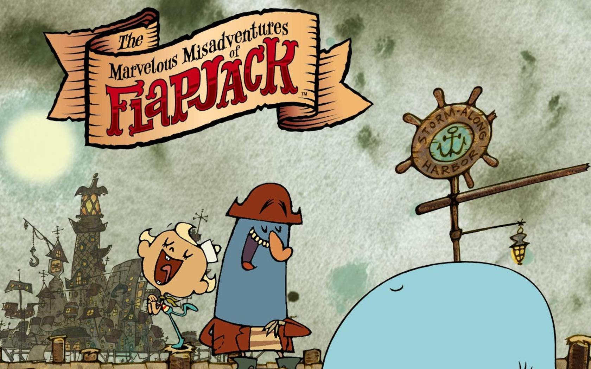

The series revolves around three main characters: Flapjack, Captain K'nuckles, and Bubbie. Flapjack is a young boy who was raised by a talking whale named Bubbie. Flapjack and Bubbie lead a peaceful life until the duo rescue a pirate by the name of Captain K'nuckles, who tells Flapjack of a place called Candied Island, an island made entirely of candy. Inspired by the adventurous pirate, Flapjack, Captain K'nuckles, and Bubbie get into strange predicaments and "misadventures" in search of candy, Candied Island, and the coveted title of "Adventurer". The three spend most of their time in Stormalong Harbor, their place of residence, and home to many strange characters..
Flapjack's Characteristics
- He's a full time adventurer!
- Candy is always his treat!
- Loves bobby and Captain Knuckles!
Even tho the production of the series has stopped in 2010, it still is a joy to rewatch the series. As for the fans that want more, check out these links:
Flapjack's Fandom
Watch Flapjack Episodes
Buy Flapjack DVD's
107 Facts about Flapjack: